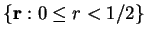
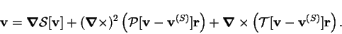
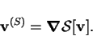
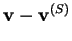
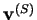
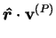
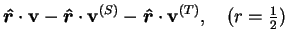

While the velocity fields of interest here are all solenoidal, the inertia and buoyancy forces can have nonzero divergence. A general vector field (of sufficient smoothness) can be decomposed as follows. The treatment is specific to the domain , but it could easily be generalized to other spheres.
|  | (B.10) |
Proof:
Define
 as the solution of the problem
as the solution of the problem
|  | (B.13) |
Then,
 is solenoidal and can be decomposed
into poloidal and toroidal parts as before.

Following Elsasser (1946),
 is called the
scaloidal part of  .
.
Note that if  is solenoidal but has a nonvanishing normal component
at the surface of the sphere; i.e. is solenoidal but not purely toroidal;
the poloidal part obtained by the present procedure,
is solenoidal but has a nonvanishing normal component
at the surface of the sphere; i.e. is solenoidal but not purely toroidal;
the poloidal part obtained by the present procedure,
| (B.14) |
It is advantageous here to apply the present procedure to all vector fields, whether or not they are solenoidal. This is because if a field is both irrotational and solenoidal, so that it has both scaloidal and poloidal representations, the scaloidal representation is usually easier to work with. In particular, in a momentum equation it can be combined with the pressure gradient term. The classic example of this is the integration of the Euler equations when the flow is both irrotational and incompressible (Lamb 1932, p. 19).
The toroidal part of a general vector field is then here defined as
| (B.15) |
Note that the normal component at the spherical surface  of the poloidal part of a vector field (defined by Lemma 2)
vanishes, since
of the poloidal part of a vector field (defined by Lemma 2)
vanishes, since
|  |  | ||
| (B.16) |